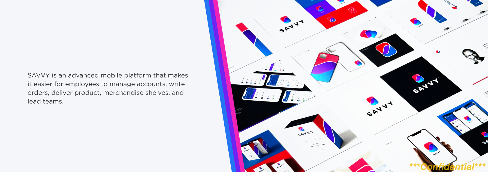
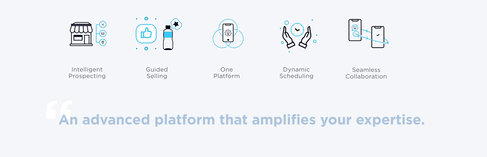
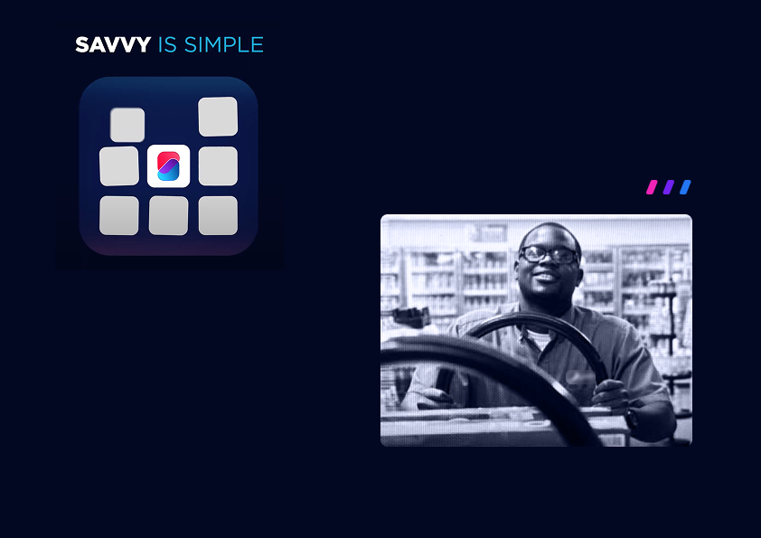
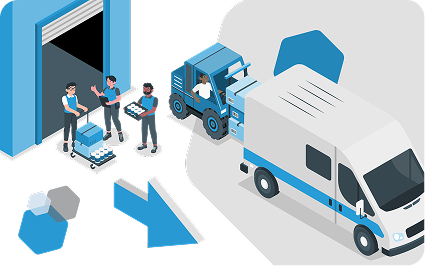
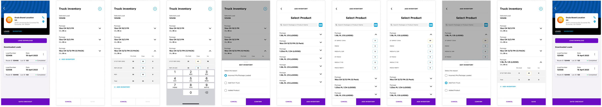

Today: The legacy app is outdated and does not unite either the data or the frontlines.
Future and now: Savvy is taking a bold step in leveraging digital technology to sharpen their competitive edge, by making it easier for frontline staffs to manage duties.

Adjust truck inventory is one of the functions to be built in Savvy. It allows delivery drivers to


Delivery drivers needed an efficient solution to manage truck inventory, ensure accurate deliveries, and reconcile stock levels in real-time, all while handling packed stocks and packages on the go.
The challenge was to design an interface that seamlessly integrated with Savvy’s design guidelines and fit within their existing operational flow.

The flow streamlined inventory management, reduced errors, and improved delivery accuracy. It provided real-time data for both drivers and management, enhancing overall operational efficiency.
Engage earlier in the product development cycle to have greater influence over strategic decisions, ensuring the design vision aligns with business objectives and technical feasibility from the start.
Treat B2B users as valued customers, placing emphasis on usability and delight in their workflows. Future improvements could focus on deeper user research to uncover additional pain points and opportunities for improving daily operational efficiency.